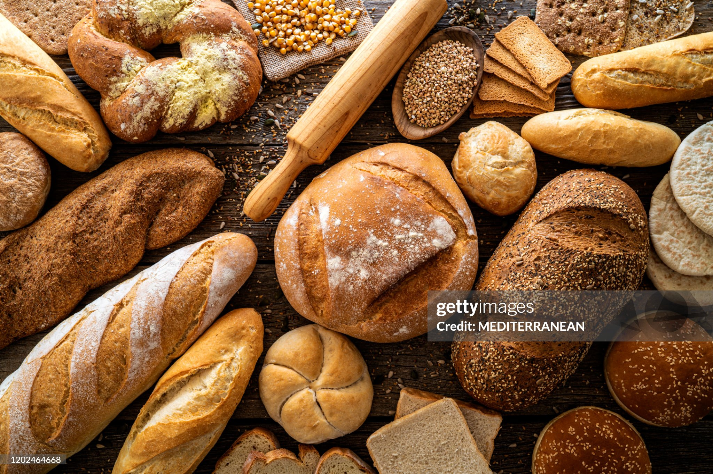

Our Story
Founded in 2022, OLIVE CRUST BAKERY began with a simple passion: bringing real, additive-free bread back to the neighborhood.

Every loaf is fermented for at least 36 hours to develop deep flavor and optimal digestibility.
Founded in 2022, OLIVE CRUST BAKERY began with a simple passion: bringing real, additive-free bread back to the neighborhood.

Every loaf is fermented for at least 36 hours to develop deep flavor and optimal digestibility.